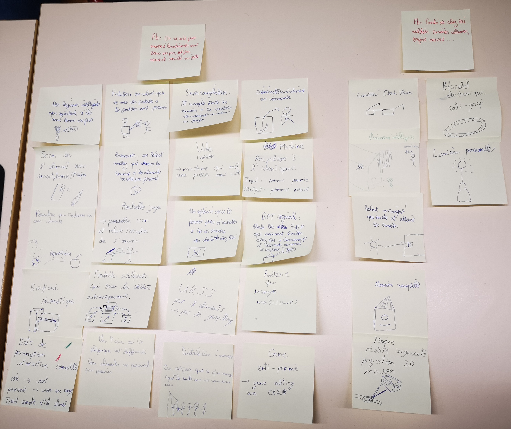
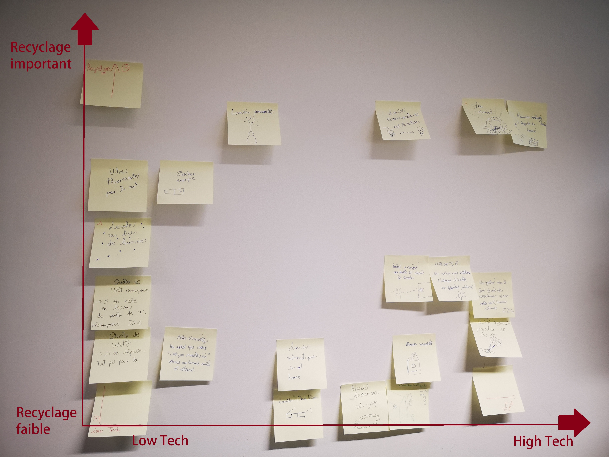
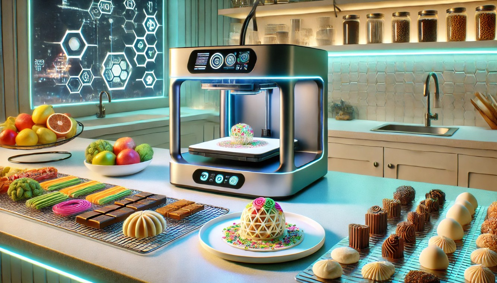

Blog Projet IHM
Thème : Le gaspillage
Participants du groupe :
Ilyes ELOTREUCH
Fatah MSAID
Nacim TALAOUBRID
Clarence PFISTER
Interviews :
Les retranscriptions écrites des interviews que nous avons réalisées.
Problèmes relevés :
- Décalage entre intentions et réalité du quotidien : les utilisateurs achètent des produits frais en pensant qu’ils vont cuisiner, mais la fatigue et les imprévus les poussent à commander ou manger dehors. Les aliments restent au frigo jusqu’à dépasser la date et finissent jetés.
- Oubli causé par le rangement et le manque de visibilité : dans un frigo rempli, les produits rangés au fond deviennent “invisibles”. L’utilisateur prend ce qui est accessible devant, oublie le reste, puis redécouvre trop tard des aliments abîmés ou périmés
- Gaspillage déclenché par la peur sanitaire et les dates : dès qu’une date est dépassée, surtout pour la viande, l’utilisateur jette automatiquement sans vérifier l’état réel du produit. Le doute et la peur d’intoxication entraînent un gaspillage immédiat.
Personas :
-
 Yanis : Jeune actif, 26 ans, sportif, vit seul en appartement (région parisienne). Métier junior à grosse charge de travail.
A l’aise avec les apps, mais pas discipliné sur le long terme. Yanis fait ses courses en pensant qu’il va cuisiner “sain” toute la semaine.
Mais entre le travail, le sport et la fatigue, il commande souvent le soir. Son frigo est plein, mais beaucoup d’aliments restent oubliés au fond.
Ses motivations : manger mieux, perdre moins d’argent, réduire le gaspillage “par principe”.
Ses freins principaux : charge mentale + manque d’énergie le soir + oubli + manque de visibilité dans le frigo.
Yanis : Jeune actif, 26 ans, sportif, vit seul en appartement (région parisienne). Métier junior à grosse charge de travail.
A l’aise avec les apps, mais pas discipliné sur le long terme. Yanis fait ses courses en pensant qu’il va cuisiner “sain” toute la semaine.
Mais entre le travail, le sport et la fatigue, il commande souvent le soir. Son frigo est plein, mais beaucoup d’aliments restent oubliés au fond.
Ses motivations : manger mieux, perdre moins d’argent, réduire le gaspillage “par principe”.
Ses freins principaux : charge mentale + manque d’énergie le soir + oubli + manque de visibilité dans le frigo.
-
 Claire : Cadre active, 45 ans, vit en appartement avec son conjoint et un enfant. Métier cadre en entreprise.
Claire fait des courses hebdomadaires et achète souvent en pack (yaourts, fruits). Avec les imprévus familiaux, certains produits passent au
second plan. Elle retrouve des aliments au fond du frigo trop tard, et jette surtout par prudence (dates, doute).
Ses motivations : ne pas gaspiller (valeurs), gérer le budget, éviter les risques sanitaires.
Ses freins principaux : imprévus + frigo encombré + organisation familiale floue (“qui cuisine quoi, quand ?”).
Claire : Cadre active, 45 ans, vit en appartement avec son conjoint et un enfant. Métier cadre en entreprise.
Claire fait des courses hebdomadaires et achète souvent en pack (yaourts, fruits). Avec les imprévus familiaux, certains produits passent au
second plan. Elle retrouve des aliments au fond du frigo trop tard, et jette surtout par prudence (dates, doute).
Ses motivations : ne pas gaspiller (valeurs), gérer le budget, éviter les risques sanitaires.
Ses freins principaux : imprévus + frigo encombré + organisation familiale floue (“qui cuisine quoi, quand ?”).
-
 Adam : Employé polyvalent en supérette d'alimentation, 33 ans. Il fait la mise en rayon fruits & légumes
(petite équipe, sous pression). Il connaît très bien les produits, mais manque de temps et de moyens.
Adam doit gérer les arrivages, le tri, les clients qui manipulent les fruits, et le manque de stockage au frais. Le gaspillage arrive vite :
un tri retardé ou une barquette abîmée peut contaminer une cagette entière.
Ses motivations : limiter la casse, garder un rayon propre, éviter de jeter des produits encore bons.
Ses freins principaux : sous-effectif + manque de place + fragilité des produits + comportements clients.
Pourquoi il est “extrême” : il vit le gaspillage à grande échelle, tous les jours, avec peu de contrôle et très peu de temps pour agir.
Adam : Employé polyvalent en supérette d'alimentation, 33 ans. Il fait la mise en rayon fruits & légumes
(petite équipe, sous pression). Il connaît très bien les produits, mais manque de temps et de moyens.
Adam doit gérer les arrivages, le tri, les clients qui manipulent les fruits, et le manque de stockage au frais. Le gaspillage arrive vite :
un tri retardé ou une barquette abîmée peut contaminer une cagette entière.
Ses motivations : limiter la casse, garder un rayon propre, éviter de jeter des produits encore bons.
Ses freins principaux : sous-effectif + manque de place + fragilité des produits + comportements clients.
Pourquoi il est “extrême” : il vit le gaspillage à grande échelle, tous les jours, avec peu de contrôle et très peu de temps pour agir.
Scenarios :
-
Scénario 1 , Yanis (jeune actif) :
Yanis fait ses courses dimanche avec l’objectif de cuisiner toute la semaine. Lundi et mardi, il rentre tard après le travail et le sport, et commande sur UberEats sans ouvrir son frigo. Samedi, en rangeant, il redécouvre un paquet de poulet dépassé au fond et le jette immédiatement par peur d’intoxication.
-
Scénario 2 , Claire (cadre + famille) :
Claire achète des packs de yaourts et des légumes pour la semaine. Entre les repas imprévus, les journées chargées et la gestion familiale, certains produits restent derrière dans le frigo. Deux semaines plus tard, elle retrouve un yaourt dépassé et le jette par prudence, en se disant qu’elle “aurait dû mieux organiser”.
-
Scénario 3 , Adam (employé magasin, extrême) :
Adam ouvre le rayon le matin et repère quelques clémentines légèrement moisies, mais il n’a pas le temps de retrier toute la cagette à cause d’une livraison et du manque de personnel. Le lendemain, la moisissure s’est propagée et il doit jeter une grande partie du stock. En parallèle, il constate que les clients manipulent les fruits fragiles, ce qui accélère encore les pertes.
Brainstorm :
L'ensemble des idées explorée pendant le brainstorm.
Design space :
L'ensemble des idées visualisés sur un plan avec les deux dimensions qu'on a identifiées.
Idées retenues :
-
Food Generator (imprimante alimentaire) :
Un appareil domestique inspiré de l’impression 3D, capable de “fabriquer” des aliments ou des repas complets à la demande. Il utilise comme matière première une cartouche de nutriments et/ou un bac de matières organiques (restes alimentaires, aliments trop mûrs, produits proches de la péremption). L’objectif est de transformer les pertes alimentaires en ressources réutilisables. Le système vise une logique de consommation circulaire, centrée sur la réduction du gaspillage.
-
Lunettes IA en réalité augmentée + application smartphone :
Une solution combinant lunettes AR et application smartphone pour détecter automatiquement les aliments périmés ou à consommer en priorité. Dès qu’un aliment est “vu” (dans le frigo, en cuisine ou en magasin), le système analyse son état et affiche une information visuelle (ex : “à consommer sous 2 jours”). Des alertes et rappels sont ensuite envoyés sur le téléphone. L’objectif est de réduire l’oubli et améliorer la gestion du frigo au quotidien.
-
Bande colorée comestible indicatrice de fraîcheur :
Une bande comestible à coller sur les aliments (viande, produits frais, plats préparés), qui change progressivement de couleur en fonction de l’état réel du produit. Elle fournit un indicateur simple et visuel de fraîcheur, avec une limite “mangeable” et une limite “à jeter”. L’objectif est de réduire le gaspillage causé par la peur sanitaire et le manque de confiance envers les dates de péremption. Cette solution rend la péremption plus intuitive et immédiatement compréhensible.
Projet sélectionné, Food Generator :
- Appareil domestique inspiré de l’impression 3D, conçu pour transformer les pertes alimentaires en repas. Il permet de produire à la demande des aliments simples (purées, pâtes, sauces, snacks) ou des plats complets, avec une texture et un goût adaptés.
- Le Food Generator dispose de deux entrées. Bac organique : restes, fruits trop mûrs, légumes abîmés, pain rassis (après tri automatique). Cartouches nutritionnelles : protéines, glucides, fibres, vitamines (pour compléter et équilibrer).
-
Fonctionnement intelligent :
- Scan et analyse : l’utilisateur dépose des aliments “à sauver”, l’appareil identifie ce qui est exploitable et refuse automatiquement les produits à risque.
- Recettes automatiques : l’appareil propose plusieurs options selon ce qui est disponible (ex : “soupe anti-gaspi”, “galettes”, “smoothie”, “sauce”).
- Modes personnalisés : suggestions de repas adaptées au nombre de personnes et aux préférences (ex : enfant difficile, sans lactose, sportif).
- Différents paramètres. Express : recette rapide en 5 minutes. Équilibré : optimisé nutritionnellement. Anti-gaspi maximal : priorité aux ingrédients les plus urgents.
- Ecran tactile avec inventaire automatique, historique, rappels (“à utiliser aujourd’hui”), et visualisation des économies réalisées (argent, CO₂, quantité sauvée).
- Traçabilité des ingrédients utilisés pour éviter les erreurs.
- L’objectif du Food Generator est de réduire le gaspillage lié à l’oubli, au manque de temps et à la peur des dates, en proposant une solution simple : rendre la nourriture “sauvable” immédiatement utile et appétissante.